")
Thieving - Rogues' Den
The Rogues' Den is only accessible to RuneScape Members. Please subscribe to get this feature.
Please note this is a 'Safe' task. If you die during this task, you will return to the start.
Introduction
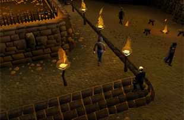
Find out when you visit the Burthorpe inn and discover the Rogues' Den!
You will need to keep your wits about you - with more than 440 devilish traps, covering an area five times the size of Lumbridge, it will tax even the nimblest of rogues.
Location
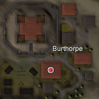
Here you will find three characters to talk to: Brian O'Richard, Martin Thwait and Emerald Benedict.
Brian O'Richard is the owner of the maze and will explain about it to you. Brian will also give you a gem to gain access to the maze itself. You can activate this gem for help at any time.
Martin Thwait owns the Lost and Found store. He sells useful items including stethoscopes, to help with your chances of picking the safes. For more information on the safe/Thieving area, view the Thieving - Extra Features page.
Finally, Emerald Benedict will help, as he is a banker.
Requirements
Anyone can enter through the pub to the area, but to use the Rogues' Den maze itself you must have at least 50 Agility and 50 Thieving.
If you wish to cut down on the time in the maze by using shortcuts then 80 Thieving is necessary.
Introduction
![[image]](../../img/main/kbase/minigames/rogues_den/mystic_jewel.gif) No items will be allowed in the maze other than the items you get from the maze and the enchanted jewel that is given to you by Brian O'Richard.
No items will be allowed in the maze other than the items you get from the maze and the enchanted jewel that is given to you by Brian O'Richard.
The jewel will give help, if and when you get stuck in the maze
The Maze

Entering the grill to the north, with only this gem in your inventory, will allow you to pass through it. If you are wearing or carrying anything else, Brian will not allow you entry. There is a banker here to store your items, should you wish to enter.
Entering the grill, the challenge has begun.
Please note that in many areas, there are doors to the 'viewing area'. If you enter this, you will forfeit your progress in the maze. When you enter the viewing area, you are 'above' the maze, so you can watch the progress of others, or even plan your route.
For each obstacle you encounter, your skills will be drained, so pick your routes wisely. Think of your total Agility and Thieving levels as points to spend; each obstacle will drain a different amount. If you are using more Agility obstacles than Thieving, you may find the challenge harder as you go on.
Your Agility and Thieving levels will not restore like normal, so waiting for them to do so is not advised. If you happen to run out of points, you will fail the obstacle and be returned to the entrance.
Agility Obstacles
|

|

|
|
|
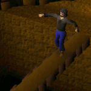
|
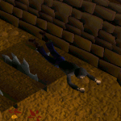
|
|
|

|

|
|
|
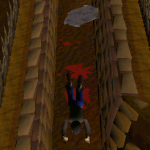
|
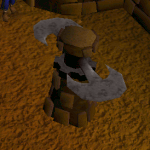
|
|
|

|
Thieving Obstacles
|

|

|
|
|
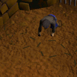
|
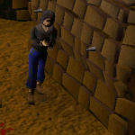
|
|
|
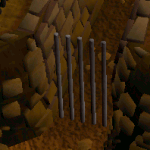
|
Puzzle Doors
Depending on the route you take in the maze, you may encounter a puzzle door. To get the door open, use your wits to solve the mind-bending trickery.The second puzzle door is located in a room with puzzle pieces. Clicking the door will open up the puzzle.
If at any point you fail the maze, you will be teleported out unharmed and will have to start again if you wish to make it to the centre. You will still be awarded experience to those skills you have used in the Den.
Before you make it to the center of the maze, you will have to get past some guards (if you didn't already, on a different path).
To get past these guards, pick up the nearby flash powder (look for red dots on your minimap). With this in your inventory, click on it to 'use' it and then select the guard before he gets too close. Your character will throw the powder which will stun the guard, now run as fast as you can past him.
Now you have made it past the obstacles to the center of the maze, you will be confronted with the safes.
Simply chose a safe and click it to pick it open and then gain your prize!
Rewards
Now you have picked the safe, you will be teleported out and congratulated by Brian. You will also receive experience in Thieving and Agility. The further you get into the maze, the higher this experience will be.
Be warned, you can fail the final safe and get no loot from it. Persistance will get you the items you seek.
Items you can gain from the safe are the pieces of Rogue armour, which are untradable and provide stats towards all Defence bonuses - although mainly it is a status symbol to show your skills as a rogue!
| Item | |||||||||||||||||||
| Attack Bonuses | Defence Bonuses | Other | |||||||||||||||||
![[Image: Stab]](../../img/main/kbase/table_text/stab1.gif "Stab") |
![[Image: Slash]](../../img/main/kbase/table_text/slash1.gif "Slash") |
![[Image: Crush]](../../img/main/kbase/table_text/crush1.gif "Crush") |
![[Image: Magic]](../../img/main/kbase/table_text/magic1.gif "Magic") |
![[Image: Range]](../../img/main/kbase/table_text/range1.gif "Range") |
|
|
|
|
|
![[Image: Summoning]](../../img/main/kbase/table_text/summoning1.gif "Summoning") |
![[Image: Strength]](../../img/main/kbase/table_text/strength1.gif "strength") |
![[Image: Prayer]](../../img/main/kbase/table_text/prayer1.gif "Prayer") |
|||||||
![[image]](../../img/main/kbase/minigames/rogues_den/rogue_head.gif) Rogue mask |
+ 0 | + 0 | + 0 | + 0 | + 0 | + 5 | + 5 | + 5 | + 5 | + 5 | + 0 | + 0 | + 0 | ||||||
| 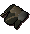 Rogue top |
+ 0 | + 0 | + 0 | + 0 | + 0 | + 10 | + 10 | + 10 | + 10 | + 10 | + 5 | + 0 | + 0 | ||||||
| 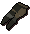 Rogue trousers |
+ 0 | + 0 | + 0 | + 0 | + 0 | + 7 | + 7 | + 7 | + 7 | + 7 | + 0 | + 0 | + 0 | ||||||
![[image]](../../img/main/kbase/minigames/rogues_den/rogue_gloves.gif) Rogue gloves |
+ 0 | + 0 | + 0 | + 0 | + 0 | + 2 | + 2 | + 2 | + 2 | + 2 | + 2 | + 0 | + 0 | ||||||
![[image]](../../img/main/kbase/minigames/rogues_den/rogue_boots.gif) Rogue boots |
+ 0 | + 0 | + 0 | + 0 | + 0 | + 2 | + 2 | + 2 | + 2 | + 2 | + 0 | + 0 | + 0 | ||||||
Aside from the rogue armour, you may get a (stackable) 'rogue kit', for all of your rogue needs.
Each rogue kit can be used to build either a spade, chisel, rope or tinderbox; perfect for when exploring new areas, not knowing what you will need to take!
Development Team
Developer: Graham B
Graphics: Tom W, Neil R
QA: Adam D
Audio: Ian T

More articles in
Thieving (Members Only)
|
|
|
Further Help
If this article does not help you, you may find the following sections of the RuneScape site helpful:
|
|